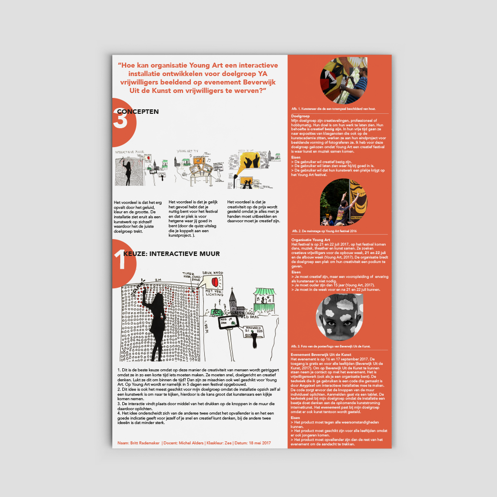

YOUNG ART DOT
Illustrator, photoshop, indesign, brackets, 3d software
Project 4 april 2017
De opdracht
Project vier was het laatste project van het jaar, hierin moest ik laten zien waar ik goed in was. Ik vond het leuk om dit project te koppelen aan een organisatie waar ik een persoonlijke band mee heb en waar ik zelf ook mee doe als kunstenaar. Als eindproject leek het me dan ook leuk om een interactief kunstproject te maken. Echter is dit nog maar een prototype. Ik hoop dat ik in de loop van de jaren zou kunnen zeggen dat ik een echte interactieve (kunst) installatie heb gebouwd.
Het eindresultaat
Ik heb een interactieve installatie gemaakt met knoppen die individueel oplichten van elkaar. Deze installatie staat op Beverwijk Uit de Kunst en zorgt ervoor dat er mensen voor het evenement Young Art worden geworven. De gebruikers krijgen via een tablet een challenge als ze hebben gezegd dat ze misschien wel mee willen doen. Ze moeten deze challenge uitvoeren door op de knoppen bijvoorbeeld een hartje te maken. Dit gaat op een tijdslimiet. Hier is het prototype te vinden hoe de installatie ongeveer gaat werken. Ook is hier een werkend prototype te zien van de tablet die naast de interactieve installatie staat. Ook heb ik een 3d prototype gemaakt die hier te bekijken is.
3D prototype
